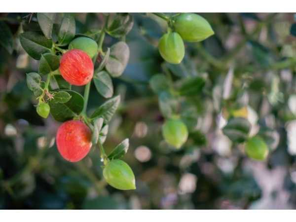

Carissa macrocarpa
Common Names: Natal Plum, Num-Num, Amatungulu, Large Num-Num
Local Name: Karonda (Hindi, related species), Natal Plum
Family: Apocynaceae
Origin: KwaZulu-Natal, South Africa
Plant Type: Perennial evergreen thorny shrub
Variety: Large-fruited species; ornamental cultivars also available
Average Lifespan: 20–30 years
| Growth Habit | Dense, rounded, thorny evergreen shrub; milky latex when cut |
| Plant Size | 2–5 meters tall; spread 2–4 meters |
| Leaves | Opposite, ovate, 3–7 cm long, thick, leathery, dark glossy green |
| Flowers | White, star-shaped, 3–5 cm across, 5-petaled, waxy |
| Flower Characteristics | Intensely fragrant (jasmine-like); bloom throughout warm months; attract moths and bees |
| Fruit | Oval, 3–6 cm long, plum-like; soft, juicy flesh with milky latex; sweet when fully ripe |
| Fruit Color | Green turning bright crimson-red when ripe |
| Seed Characteristics | 6–16 small, flat, brown seeds embedded in flesh |
| Root System | Fibrous, moderately deep; tolerates sandy and rocky soils |
| Climate | Subtropical to tropical; salt and wind tolerant |
| Temperature Range | 18–35°C ideal; tolerates brief frost to -2°C |
| Rainfall Requirement | 500–1500 mm annually; drought-tolerant once established |
| Soil Type | Well-drained sandy to loamy; tolerates poor and rocky soils |
| Soil pH Preference | 5.5–7.5 |
| Sun Requirement | Full sun to partial shade (6+ hours daily) |
| Spacing | 2–3 meters between plants; closer for hedging |
| Irrigation Method | Drip irrigation; minimal once established |
| Water Requirement | Low; very drought-tolerant |
| Can it Grow in Pots? | Yes, excellent container plant (15+ liters); dwarf cultivars available |
| Fertilizer Schedule | 2 times per year; spring and mid-summer |
| Recommended Organic Fertilizers | Compost, balanced organic fertilizer, bone meal |
| Pesticide Frequency | Rarely needed; naturally pest-resistant |
| Recommended Organic Pesticides | Neem oil for occasional scale or mealybug |
| Mulching Practice | Light organic mulch; not essential |
| Training System | Natural form; excellent as security hedge due to thorns |
| Pruning Time | After fruiting; shape as desired |
| How to Prune | Tip-prune for bushiness; hedge-trim for formal shape; wear gloves (thorns and latex) |
| Common Pests | Scale insects, mealybugs (rare); generally pest-free |
| Common Diseases | Root rot in waterlogged soil; otherwise very disease-resistant |
| Disease Prevention & Remedies | Ensure good drainage; avoid overwatering |
| Flowering Months | Spring through autumn; nearly year-round in tropics |
| Fruiting Season | Summer to autumn; continuous in warm climates |
| Days to Harvest | 60–90 days from flowering |
| Harvest Indicators | Fruit turns deep red; yields to gentle pressure; sweet aroma develops |
| Average Yield per Plant | 5–15 kg per plant per year |
| Pollination Type | Self-pollination; insect-assisted |
| Pollination Notes | Night-blooming flowers attract moths; bees visit during day |
| Pollination Details | Self-fertile; fragrant flowers attract nocturnal moths and diurnal bees |
| Propagation by Seeds | Seeds germinate in 2–4 weeks; seedlings fruit in 2–3 years |
| Propagation by Cuttings | Semi-hardwood cuttings root easily in 4–6 weeks |
| Propagation by Grafting | Not commonly grafted; cuttings are the preferred method |
| Water Usage | Very low; excellent xeriscape plant |
| Soil Conservation Practices | Dense growth prevents erosion; good for coastal stabilisation |
| Organic Practices Used | Virtually no chemical inputs needed |
| Companion Plants | Aloe, agave, other drought-tolerant species |
| Biodiversity Benefits | Fruit eaten by birds; thorny structure provides nesting habitat; flowers support pollinators |
| Commercial Production Regions | South Africa, India (as ornamental), Florida, Hawaii, Mediterranean |
| Market Uses | Fresh fruit, ornamental hedge, landscaping |
| Processing Uses | Jams, jellies, sauces, pies |
| Market Value (Approx.) | ₹100–250 per kg (niche market); primarily ornamental value |
| Symbolism | Traditional Zulu fruit; name "Amatungulu" from isiZulu language |
| Traditional Uses | Fruit eaten fresh by indigenous peoples; root decoction used in traditional medicine; thorny hedge for livestock enclosures |
| Calories | 62 kcal per 100g |
| Dietary Fiber | 1.0 g per 100g |
| Vitamin C | 38 mg per 100g |
| Vitamin A | Trace amounts |
| Iron | 1.3 mg per 100g |
| Potassium | 260 mg per 100g |
| Antioxidants | Rich in vitamin C, phenolics, and cardiac glycosides |
| Other Key Nutrients | Calcium, magnesium, phosphorus |
| Anxiety & Sleep | Not a primary use |
| Immune Support | Good vitamin C content supports immune function |
| Anti-inflammatory Properties | Root and bark extracts used in traditional medicine for pain and inflammation |
| Heart Health | Contains cardiac glycosides; traditional use for heart conditions (caution advised) |
| Digestive Health | Ripe fruit is mildly laxative; unripe fruit is astringent |
Disclaimer: Information provided is for educational purposes only and not a substitute for medical advice. Note: All parts except ripe fruit contain toxic latex.
Add your field observations here.